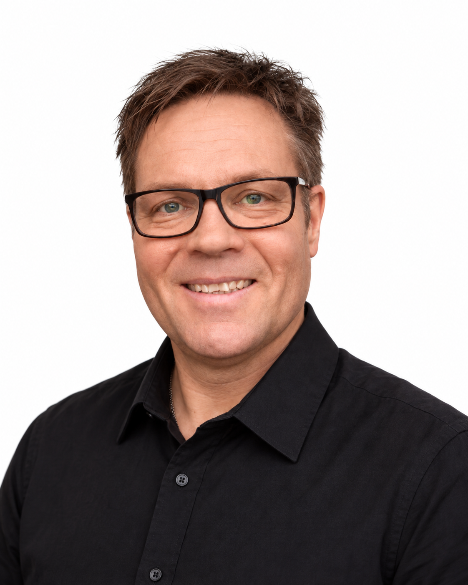
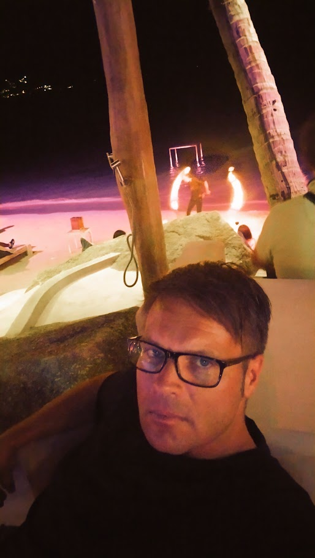
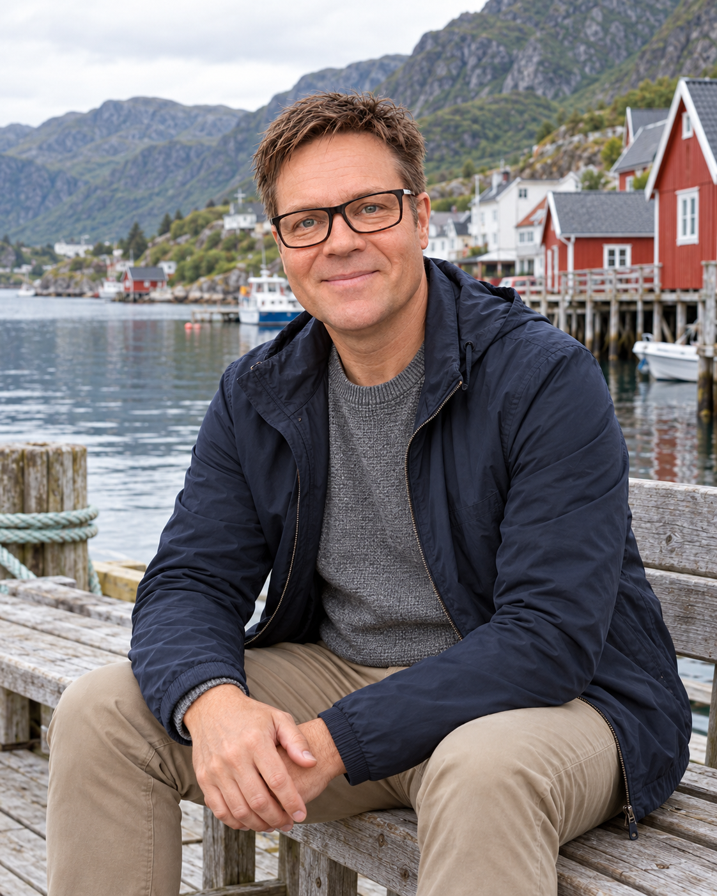

Sinulle tärkeä tavoite
Ehkä haluat lisätuloja, uuden suunnan tai tilaa rakentaa jotain omaa. Tavoitteen ei tarvitse olla sama kuin minulla.
AJATUKSIA TYÖSTÄ, TAVOITTEISTA JA YHDESSÄ TEKEMISESTÄ
Entä jos nykyisen työsi rinnalla olisi tilaa jollekin omalle — ja ympärillä ihmisiä, joiden kanssa sitä on innostavaa rakentaa?
Aloitetaan keskustelustaTutustuminen ei edellytä päätöstä mukaan lähtemisestä.

TARINANI

Musiikki on antanut minulle hienon ammatin. Silti aloin jossain vaiheessa miettiä: mitä muuta haluan työelämältäni?
Olen tehnyt pitkän uran klassisen musiikin ammattilaisena. Ensimmäisen vakituisen orkesteripaikkani sain vuonna 1999, ja vuodesta 2003 olen työskennellyt Suomen Kansallisoopperassa. Pidän työstäni edelleen. En etsinyt siitä ulospääsyä, vaan elämääni lisää mahdollisuuksia.
Halusin enemmän liikkumavaraa: lisätuloja, mahdollisuutta kerryttää varoja sijoittamiseen ja vapautta tehdä omia valintoja. Palkkatyössä mahdollisuudet tuntuivat olevan vahvasti sidoksissa aikaan ja paikkaan. Kiinnostuin siitä, voisinko rakentaa rinnalle jotain omaa.
Lähdin opiskelemaan kiinteistönvälitystä ja aloitin välittäjän työt vuonna 2022. Samalla kiinnostukseni yrittäjyyteen ja erilaisten tulonlähteiden rakentamiseen kasvoi.
Kun eteeni tuli uudenlainen liiketoimintamahdollisuus, olin ensin skeptinen. En tuntenut toimintatapaa, eikä se heti tuntunut omalta. Päätin silti ottaa selvää. Vähitellen aloin nähdä siinä asioita, jotka sopivat omiin tavoitteisiini — erityisesti mahdollisuuden tehdä yhteistyötä oppimishaluisten ihmisten kanssa nykyisestä työstäni luopumatta.
Eniten minut yllätti se, kuinka paljon olen oppinut ihmisistä, vuorovaikutuksesta ja itsestäni. Olen tutustunut ihmisiin, joita en muuten olisi tavannut, saanut uusia kokemuksia ja löytänyt uudenlaista innostusta tekemiseen.
Nyt haluan rakentaa tätä pitkäjänteisesti. Minulla on omat taloudelliset tavoitteeni, mutta yhtä tärkeää on se, kenen kanssa teen töitä. Haluan ympärilleni ihmisiä, joiden kanssa on mukavaa ja innostavaa tehdä asioita ja joilla on omia päämääriä. Haluan myös tukea heitä niiden tavoittelussa.
Katson tulevaan innolla. On innostavaa rakentaa jotain omaa, oppia uutta ja edetä kohti tavoitteita yhdessä muiden kanssa. Jokainen askel avaa uusia mahdollisuuksia — ja minulle juuri se tuo arkeen lisää energiaa ja asioita, joita odottaa.
Minun ei tarvitse luopua hyvästä, jotta elämään mahtuisi jotain lisää.
Esko
Mitä sinä haluaisit seuraavaksi?MILLAINEN PORUKKA?
En etsi ympärilleni samanlaisia ihmisiä. Haluan tutustua ihmisiin, joilla on omia tavoitteita ja halua tehdä asioita yhdessä.
Ehkä haluat lisätuloja, uuden suunnan tai tilaa rakentaa jotain omaa. Tavoitteen ei tarvitse olla sama kuin minulla.
Kaikkeen ei tarvitse olla valmista vastausta. Minua kiinnostaa avoin mieli ja halu selvittää, millainen tekeminen sopii itselle.
Arvostan luottamusta, kannustamista ja sitä, että työnteko tuntuu myös mukavalta. Haluan tukea tiimiläisiä heidän omissa tavoitteissaan.
ENNEN KUIN JUTELLAAN
Rakennan tiimiä liiketoimintamahdollisuuden ympärille. Tämä sivu on kutsu tutustumaan minuun ja kertomaan omista ajatuksistasi. Keskustelussa käymme läpi, mistä toiminnassa on kyse ja mitä se käytännössä edellyttää.
Ei. Ensimmäinen keskustelu on tutustumista. Kerron lisää, vastaan kysymyksiisi ja kuuntelen, mitä sinä etsit. Saat rauhassa arvioida, onko asia sinulle ajankohtainen.
Itse lähdin etsimään mahdollisuutta juuri työn rinnalle. Sopivuus omaan arkeesi riippuu ajankäytöstäsi ja siitä, mitä tavoittelet. Näitä on hyvä pohtia ennen sitoutumista.
Käymme keskustelussa läpi toiminnan kustannukset, ansaintamallin ja siihen liittyvät epävarmuudet ennen mahdollista päätöstäsi. Lisätulot eivät ole varmoja, eikä tavoitteeni sijoittamisesta ole lupaus toiminnan tuotoista. Tällä sivulla ei tarjota sijoituspalvelua.
TUTUSTUTAAN
Kerro, mikä sinua kiinnostaa ja mitä tavoittelet. Katsotaan yhdessä, voisiko meillä olla yhteinen suunta.

Kerro hieman itsestäsi ja siitä, mitä toivot tulevalta. Vastaaminen vie pari minuuttia, eikä se sido sinua mihinkään.
Pakolliset kentät on merkitty tähdellä. Voit valita sinulle sopivan yhteydenottotavan.
Voit myös kirjoittaa suoraan:
resonance.eskosavioja@gmail.com
TIETOSUOJA
Rekisterinpitäjä ja yhteyshenkilö: Esko Savioja, resonance.eskosavioja@gmail.com.
Kyselyssä antamiasi tietoja käytetään yhteydenottoon ja mahdollisuudesta kertomiseen antamasi suostumuksen perusteella. Tietoja ovat nimi, kiinnostuksen aiheet, kuvaus itselle tärkeistä asioista, mahdollinen tavoitekuvaus, halukkuus kuulla lisää, yhteystiedot, toivottu yhteydenottotapa ja lupa yhteydenottoon. Vastaukset saadaan sinulta itseltäsi. Lomake ei tilaa uutiskirjettä tai liitä sinua markkinointilistalle.
Vastaukset tallentuvat ja välittyvät Formspreen kautta sähköpostiin. Formspree ilmoittaa käyttävänsä Yhdysvalloissa sijaitsevia palvelimia ja EU:n vakiosopimuslausekkeita käsittelijänä. Sähköpostipalveluna on Gmail. Palveluntarjoajat käsittelevät myös palvelun tuottamiseen ja suojaamiseen tarvittavia teknisiä tietoja.
Voit peruuttaa suostumuksesi sekä pyytää tietojesi tarkastamista, oikaisua, poistamista tai käsittelyn rajoittamista lähettämällä viestin yllä olevaan sähköpostiin. Oikeus tietojen siirtoon määräytyy sovellettavien edellytysten mukaan. Voit tehdä valituksen tietosuojavaltuutetulle. Suostumuksen peruuttaminen ei vaikuta sitä edeltäneen käsittelyn lainmukaisuuteen.
Jos keskustelu ei johda jatkoon, kyselyn vastaukset ja niihin liittyvät sähköpostit poistetaan Formspreestä ja Gmailista viimeistään yhden kuukauden kuluttua kyselyyn vastaamisesta. Jos yhteydenpito jatkuu, tietoja säilytetään vain yhteydenpidon ja sovittujen jatkotoimien edellyttämän ajan. Mahdollisesta muusta käyttötarkoituksesta ja säilytyksestä kerrotaan erikseen.
Googlen palveluissa tietoja voidaan käsitellä myös EU/ETA-alueen ulkopuolella Googlen tietosuojakäytännössä kuvatuin suojatoimin. Lisätietoa palveluntarjoajien käytännöistä ja siirtojen suojatoimista on alla olevissa linkeissä. Sivusto julkaistaan GitHub Pagesissa, joka käsittelee sivupyyntöjen teknisiä tietoja, kuten IP-osoitteita, palvelun tuottamista ja suojaamista varten.
Formspreen tietosuoja · Formspreen tietoturva ja siirtojen suojatoimet · Googlen tietosuoja